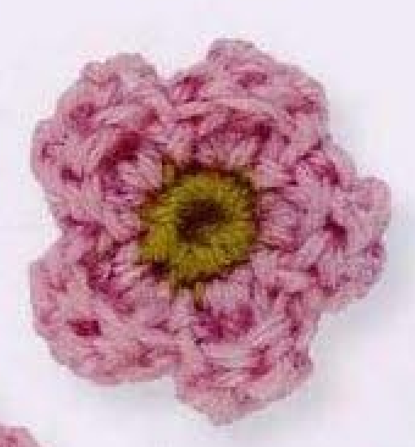
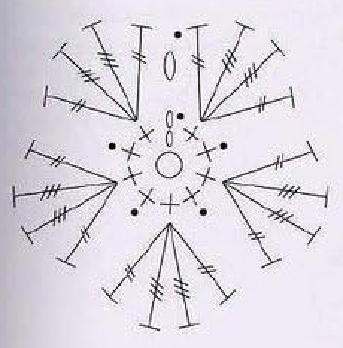
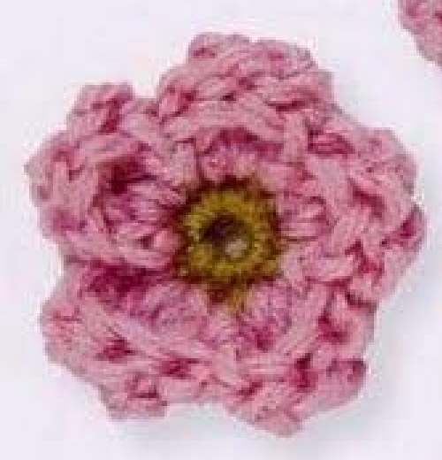
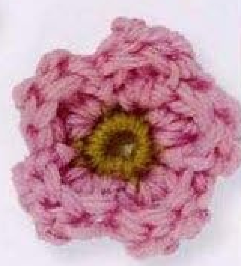
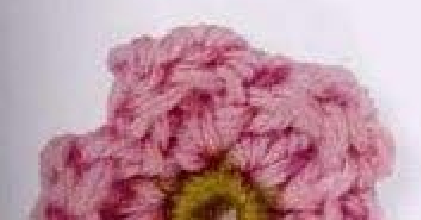
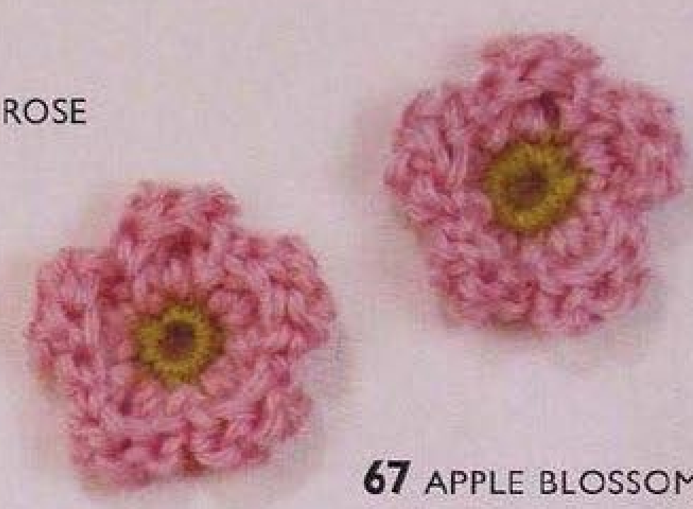
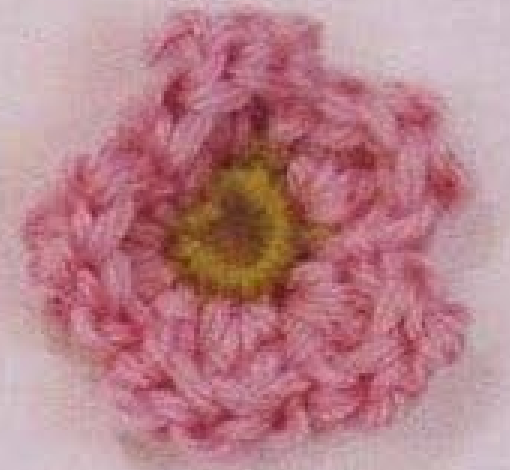

Crochet Apple Blossom is a small two-round flower with a lime center and five pink petals. Each petal is a fan of four completed tall stitches, anchored by a slip stitch in the following center position. This guide follows pattern 67 in Lesley Stanfield’s 100 Flowers to Knit & Crochet, preserving its counts and placements in US terms and including the original chart plus the distinct finished examples visible in the scan.

Key Takeaways
- Use DK wool in lime A and pink B.
- The center has ten counted positions: a two-chain rise and nine actual singles.
- Each petal has US treble, two double trebles, and treble in one base.
- Four repeated fan-and-anchor groups are followed by a separately written fifth fan.
- The final slip stitch belongs to the pink starting chain one.
- No stem, leaf, sewn stamens, or additional petal tier is included.
CROCHET APPLE BLOSSOM FLOWER PATTERN
Project: One five-petal wool flower with a small lime center. This entry belongs to the source’s intermediate designs and uses very tall pink fan stitches. US terms are used; hook, gauge, quantity, and finished dimensions are not specified.
| Skill level | Intermediate section in the source. Practical focus: US treble and double treble, alternating center placements, and an invisible finish. |
|---|---|
| Base size | One flower with 5 petals. Finished measurements are not specified. |
| Yarn | DK wool: lime A and pink B. |
| Quantity, hook, gauge | Not specified. Choose a hook appropriate to your wool and examine a complete center and fan. |
| Notions | Scissors and a blunt needle for securing ends. |
| US abbreviations | ch = chain; sc = single crochet; tr = treble crochet; dtr = double treble crochet; sl st = slip stitch; RS = right side. UK dc = US sc; UK dtr = US tr; UK trtr = US dtr. |
| Center round 1, RS | With A, make an adjustable ring. Ch 2, 9 sc in the ring. Pull the end to close. With B, sl st in the top chain of the starting ch 2. 10 counted positions. Continue B. |
| Petal round 2 | Ch 1; *(tr, 2 dtr, tr) in the next sc, sl st in the next sc; repeat from * 3 more times. Then (tr, 2 dtr, tr) in the next sc, sl st in the starting ch 1. 5 petals. |
| Finish | Fasten off invisibly. Secure the ends without pulling the final pink fan closed or distorting the lime center. |
| Source construction | Two rounds total: lime center and one pink petal round. No extra center increases, rear arches, sewn stamens, stem, or leaves are supplied. |
Understand the Two-Round Flower
The lime center is a small ring of single crochet, and all five pink petals are added directly to its edge in the next round. Each petal uses one center base for its four tall stitches, then the following base receives a slip-stitch anchor. This alternating route spreads the fans around the center.
The petals are one layer, even though the tall wool stitches can fold or curl slightly in the photographs. There is no hidden rear-arch round, second petal tier, separate rolling strip, or sewn petal assembly. The texture comes from the four tall stitches sharing one base.
The written repeat has four complete fan-and-next-single groups followed by a separately written fifth fan. The last anchor goes into the pink starting chain one. Keep that ending distinct from the earlier slip stitches into center singles, since the round’s final closure is named explicitly.
Choose Wool and Prepare the Tools
The supplied yarn is DK wool in lime A and pink B. Lime remains visible at the center and pink forms every petal. Choose yarns of comparable thickness so that one color does not overwhelm the other or produce markedly different fabric density at the joining point.
No hook size, numerical gauge, total yarn quantity, or finished flower width is given. Choose a hook suited to your own wool and work the center with one fan as a sample. The center should remain compact while the tall pink stitches have enough flexibility to spread around their shared base.
A sample is useful if you intend to attach the flower to a measured surface. DK is a yarn category rather than a guarantee of identical motif size across different fibers, brands, or tension. Finish one flower before estimating the placement of several blossoms on a bag or textile panel.
Keep scissors and a blunt needle ready for the invisible finish and end securing. This entry does not require separate sewing yarn for stamens or extra materials for a stem or leaf. The lime disc and pink fans are the complete source flower construction.
Translate the Tall Stitches into US Terms
The original UK double crochet becomes US single. UK double treble becomes US treble, and UK triple treble becomes US double treble. The fan therefore uses two different tall stitch heights, not four US doubles or four trebles of equal height.
For a US treble, yarn over twice before inserting the hook into the stated single. Draw up a loop, then complete three successive yarn-over-and-draw-through-two steps. Finish the stitch fully so that one working loop remains before starting the next stitch in the fan.
For a US double treble, yarn over three times before insertion, draw up a loop, then complete four successive draw-through-two steps. Work two separate double trebles in the fan’s shared base. Their greater height supplies the petal’s central fullness between the two slightly shorter trebles.
The four fan stitches have their own completed tops. They are not a cluster that retains a loop from each stitch for one shared closure. Holding partial stitches on the hook would make a different petal and change the visible open fan in the original chart.
Terminology checkpoint: The petal is US tr, dtr, dtr, tr, all in one base. UK trtr must be translated to US double treble rather than shortened to US treble.
Step 1: Make the Lime Adjustable Ring
With lime A, make an adjustable ring. Keep the right side facing and chain two. Work nine US singles into the ring, making each single around the ring rather than into a separate chain foundation. The source counts the rise and nine actual singles as ten positions.
Pull the starting end to close the ring. Close it enough to bring the bases together while leaving their stitch tops identifiable. An adjustable ring can be compact at its center without making the upper edge so tight that the pink fan bases become difficult to enter.
Before joining, separate the two-chain rise from the first actual single. The closing slip stitch belongs to the rise’s top chain. A marker at the first actual single can be useful while learning to distinguish the two, but it does not replace the named joining placement.
Step 2: Join Pink at the Top Chain
Use B to slip stitch into the top chain of the starting two-chain rise. This introduces pink at the center’s closing join, after the nine actual lime singles have been worked. Continue B for the petal round rather than adding another lime round first.
The top chain is the second chain of the starting rise. Do not join into its first chain or move the color change to the first actual single for convenience. That shift can alter the start of the alternating fan-and-anchor route around the center.
Count ten center positions before making the pink rise. Keep the lime end and pink joining end clear of the working strand. If a stitch top seems hidden under the join, spread the center gently instead of adding an extra single to compensate for an uncertain count.
Center checkpoint: Nine actual lime singles plus the counted two-chain rise give ten positions. The next round begins with a pink chain one after the named top-chain join.

Step 3: Make the First Four-Stitch Fan
Chain one with B. In the next lime single, work one US treble, two US double trebles, and one US treble. All four stitches share that same base. The fan widens from one center point and has four separate completed stitch tops.
Keep the stitch order unchanged. The two longest stitches belong together in the middle of the fan, between the outer trebles. Alternating the heights or substituting a double at one side would change the outline rather than simply adjusting tension.
Work the shared base carefully without pulling its lime stitch open excessively. The taller stitches require several yarn overs, but their tension can remain controlled and consistent. Tightening each completed stitch too aggressively can pull the entire fan inward before its anchoring slip stitch is made.
Step 4: Anchor in the Next Center Single
After completing the four tall stitches, slip stitch into the next lime single. This is a different base from the fan’s shared base. The anchor lowers the pink working route between petals and moves it to the next part of the center edge.
Do not slip stitch back into the fan’s own base or into the top of its last treble. The written instruction advances to the next center single. Returning to the same base would fail to use the alternating foundation positions and could crowd the later petals.
Keep the slip stitch small but workable. A very tight anchor can drag the fan down into the lime center or make its next placement difficult to see. Count the completed fan as one petal regardless of how many individual tall stitches are visible along its top.

Step 5: Repeat Three More Complete Groups
Repeat the complete fan-and-next-single anchor group three more times after the first. Each group contains treble, two double trebles, and treble in the next single, followed by a slip stitch into the following single. The first group plus three more makes four complete repeated groups.
Track the center bases as you advance rather than counting only the tall pink tops. Four completed groups occupy eight actual center singles, with a fan base and anchor base in each pair. The remaining actual single is available for the separately written fifth fan.
If the next base is hidden by a previous fan, move the pink stitches gently aside to locate its lime top. Do not skip it and join to an arbitrary gap. Keeping the original center route intact is what makes five petals fit the ten-position foundation without extra increases.
Each Fan and Anchor Use a Pair of Positions
The first four petals each use one single for all four tall stitches and the next single for an anchor. The ninth actual center single supports the final fan, whose closing slip stitch returns to the pink starting chain one. This explains the separate ending in the written instructions.
Step 6: Add the Fifth Fan and Close the Round
In the next available lime single, work treble, two double trebles, and treble together for the fifth fan. This has the same four-stitch shape as every earlier petal. The only difference is the final anchor destination printed after it.
Slip stitch into the pink starting chain one. Do not insert into another invented center single or add a fifth ordinary fan-and-next-single pair after this final fan. The source states five petals total and gives this chain-one closure explicitly.
Count all five completed fans before fastening off. Each should have two longest stitches between its outer trebles, with the earlier four separated by low center anchors. The final join should complete the ring without pulling the first and fifth fans into one indistinguishable group.
Petal checkpoint: Work the bracketed group four times in total, then one final fan. Repeating the group five times and adding another final fan would give an incorrect sixth petal.

Step 7: Finish Invisibly and Inspect the Flower
Fasten off invisibly as the source directs. Secure the pink end on the back, keeping the finishing path unobtrusive among the tall stitches and starting chain. Do not create a conspicuous extra loop that looks like another petal-edge feature.
Secure the lime starting end after checking that the center remains closed and the petal bases are evenly arranged. Tightening the ring end later should not pull one side of the center into the pink fans. Inspect both sides before trimming the remaining ordinary ends.
Arrange the five fans with gentle handling. The finished photographs show softly folded wool stitches rather than rigid flat paper-like petals. Lightly spreading a fan can reveal its four tops, but forceful stretching cannot correct a missing double treble or a wrongly placed slip-stitch anchor.

Read the Chart Beside the Written Recipe
The original chart shows the center ring and five groups of tall stitch symbols. Use it to follow the alternating fan and low anchor route around the foundation. Remember that the chart uses the book’s UK terms, while the compact card here names the translated US stitch heights.
The longest symbols in each fan correspond to the two US double trebles between the US trebles. Read those as complete individual stitches sharing one base. A symbol group widening outward from one point is consistent with a fan, not evidence of an extra petal row or shared-top cluster.
The chart is a stitch map rather than a photograph of progress. The other images are completed examples. Compare their lime centers and five-petal outlines for shape guidance, while using the written directions for the exact final chain-one join and repeat count.

Troubleshoot Tall-Stitch Fans
The flower has six petals
Revisit the printed repeat: one group followed by three more makes four, then the separately written fifth fan finishes the round. If five complete groups were made before adding the final fan, remove that extra group and restore the intended five-petal total.
The petals are short or unusually narrow
Check the US translation and the number of yarn overs. The middle two stitches are double trebles with three initial yarn overs. Using ordinary trebles throughout or replacing them with doubles reduces the fan height and changes its fullness even if the center count is correct.
The last petal cannot be placed
Count the nine actual center singles and review each alternating fan base and anchor base. A same-base anchor or a skipped lime stitch earlier can disrupt the route. The final fan belongs in the remaining actual single, and its closure returns to the pink starting chain one.
The center disappears beneath the pink stitches
Inspect the shared-base fans and anchor tension before changing the recipe. Four separate tall stitches in one base can fold naturally, but a tight slip stitch may pull them inward. Arrange the existing fan gently and preserve the small visible lime center rather than adding an unprinted second center round.

Optional Colors, Sizing, and Decorative Placement
Other shades can be optional color substitutions while retaining the lime-center role and contrasting petal role. These are personal choices rather than additional source colorways. A different yarn thickness or hook may change the flower’s width, but no graded sizes or gauge calculations are included in the entry.
Suggested applications include a small floral accent on a bag, fabric panel, or handmade accessory. These are added use ideas rather than complete projects supplied with Apple Blossom. Arrange a finished sample on the intended surface and attach through stable back or center stitches, keeping the five soft fans visible.
Adding a stem, leaf, bead, sewn yellow stamens, or a second petal layer changes the original design. The directory includes other motifs nearby, but they are separate entries. Keep their recipes distinct if you choose to combine completed pieces in a larger arrangement.
Apple Blossom at a Glance
- DK wool in lime and pink.
- Ten counted center positions from a rise and nine singles.
- Five fans, each containing tr, dtr, dtr, tr.
- Alternating fan bases and low slip-stitch anchors.
- Final join into the pink starting chain one, then invisible finishing.
Conclusion
Apple Blossom makes its five-petal shape through a short, precise stitch route. Keep the two tall stitch heights distinct, place each four-stitch fan in one base, and follow the separate fifth-fan ending. The compact card contains the complete two-round source recipe in US terms. Click the Pin to see the pattern again and use the chart while making your own small pink blossoms.
Source and Tags
Source: Lesley Stanfield, 100 Flowers to Knit & Crochet, pattern 67 Apple Blossom. Instructions and chart are on printed page 83, PDF page 77; the directory examples are on printed page 25, PDF page 20. All photographs show completed flowers, with one instruction example partly beyond the scan. US translation and additional practical guidance accompany the source sequence.
Crochet Apple BlossomFive-Petal FlowerDK WoolTall-Stitch FansFlower AppliqueUS Crochet Terms